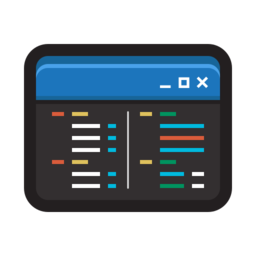

I'm a passionate web developer who loves creating beautiful and functional websites.
What do I do?
I'm a programmer from Poland (Kraśnik), specializing in web development. I work with HTML, CSS, JavaScript, PHP, and Python.
My interests
I enjoy exploring the forest near my town, mountain biking, coding, and listening to a lot of music. I also sometimes play games for example CS2, BeamNG.drive and The Forest.
When and why did I start programming?
I started programming on November 9, 2024, inspired by a friend who was creating his own website. I learned HTML in about three weeks, then quickly picked up CSS and built my first site. A month later, I learned the basics of JavaScript, and recently also explored PHP and Python.
Passion for programming
Programming is my passion — I mostly code for fun, building web projects that challenge me and help me grow as a developer. I'm focused only on web development.
My Projects
Maintained:
Abandoned:
KotoWeb
It was my first website, but i closed it because the code was... let's not talk about that
PiesoWeb
My second website. It was the same as KotoWeb but with dogs instead of cats.
Contact
Check out my GitHub
Discord: @kotokk_dev
Join my Discord server: HackSphere
 Follow me on TikTok
Follow me on TikTok
My tools
 Code editor: Visual Studio Code
Device: ThinkPad T495
OS: Windows 11
Linux distros i've used:
Mint, Arch, Debian, Peppermint, Kali (i still prefer to use Windows)
Info
Dark mode automatically enables between 22:00 PM and 09:00 AM for a more comfortable viewing experience at night.
Welcome to my about me page!
I'm a fullstack web developer